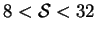
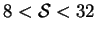
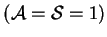
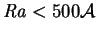
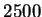
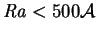
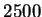

In the investigations of vapour transport across cuboids described in
previous chapters, it has been assumed
that all dependent variables were independent of  (see
fig. 2.1a for the geometry and axes),
but since the confining walls cannot physically be of infinite horizontal
extent, the flow in such a
geometry is inherently three-dimensional.
This assumption is common to
the vast majority of previous studies of
both the present and the analogous single fluid heat transfer problems.
This is true not only of analytical
(Batchelor 1954) and
numerical (Elder 1966)
investigations, but also many experimental studies.
The two main questions about this assumption are whether or not the flow
at any particular location is affected by the presence of the end-walls, and
what effect the finite spanwise aspect ratio,
(see
fig. 2.1a for the geometry and axes),
but since the confining walls cannot physically be of infinite horizontal
extent, the flow in such a
geometry is inherently three-dimensional.
This assumption is common to
the vast majority of previous studies of
both the present and the analogous single fluid heat transfer problems.
This is true not only of analytical
(Batchelor 1954) and
numerical (Elder 1966)
investigations, but also many experimental studies.
The two main questions about this assumption are whether or not the flow
at any particular location is affected by the presence of the end-walls, and
what effect the finite spanwise aspect ratio,  , has on global parameters,
such as the overall flow and vapour and energy transport rates.
, has on global parameters,
such as the overall flow and vapour and energy transport rates.
Nonintrusive techniques for visualizing the density disturbance field, such as the shadowgraph method (Schöpf, Patterson & Brooker 1996), schlieren method (Han & Kuehn 1991) and Mach-Zehnder (Eckert & Carlson 1961) and schlieren (Sernas & Fletcher 1970) interferometry, all involve an integration through the fluid along the path of a light ray. With rare exceptions (Schöpf & Stiller 1997), these rays have been directed horizontally and parallel to the hot and cold walls, leading to images more or less comparable with the results of planar analyses. The problem with this methodology is that such images provide no information on variations along the line of sight, whereas this information is required for their interpretation, e.g. for the back-calculation of the temperature field. The typical remedy is the assumption of uniformity, consistent with the two-dimensional hypothesis.
Some common methods of investigating the flow field, such as
thermocouple probes and
laser-Doppler and hot wire anemometry do not have this
intrinsic planarity, since the measurements are strictly local.
Nevertheless, experiments are often set up with large  and measurements restricted to the plane of spanwise
symmetry (
and measurements restricted to the plane of spanwise
symmetry ( ). An example of this is the work of
Aung, Fletcher and Sernas (1972)
on flow in vertical ducts, where
.
Though these figures
are doubtless large enough for the midplane flow to be independent of
). An example of this is the work of
Aung, Fletcher and Sernas (1972)
on flow in vertical ducts, where
.
Though these figures
are doubtless large enough for the midplane flow to be independent of
 , it is necessary to know the minimum value of
, it is necessary to know the minimum value of  for which this is
true in order to apply the results. Further, at the lower values of
for which this is
true in order to apply the results. Further, at the lower values of
 employed, the end-walls would certainly have reduced the net
vertical flow rate. In their study of a fully enclosed flow,
Ozoe et al. (1983)
did vary the spanwise location of the point of
intersection of the Doppler laser beams, but only within a restricted range
about the centre: sufficient to demonstrate local two-dimensionality of
the flow, but providing only an upper bound on the domain of influence
of the end-walls.
employed, the end-walls would certainly have reduced the net
vertical flow rate. In their study of a fully enclosed flow,
Ozoe et al. (1983)
did vary the spanwise location of the point of
intersection of the Doppler laser beams, but only within a restricted range
about the centre: sufficient to demonstrate local two-dimensionality of
the flow, but providing only an upper bound on the domain of influence
of the end-walls.
Early investigations of the analogous single fluid heat transfer problem,
such as those of Mull and Reiher (described by
Jakob 1949, p. 537),
focused on measurements of the overall heat transfer rate
rather than the flow or temperature fields. After a test in which  was halved from 25.7 while the other parameters were kept constant
resulted in only a 1.3% reduction in the heat transfer coefficient,
was halved from 25.7 while the other parameters were kept constant
resulted in only a 1.3% reduction in the heat transfer coefficient,  was dropped as a governing dimensionless group.
For the laminar boundary layer regime, however,
was dropped as a governing dimensionless group.
For the laminar boundary layer regime, however,
 must become increasingly important as it decreases, as demonstrated
by ElSherniby, Hollands and Raithby (1982)
who on halving
must become increasingly important as it decreases, as demonstrated
by ElSherniby, Hollands and Raithby (1982)
who on halving  from 15 found a
3% change in the heat transfer coefficient. In the Handbook of Heat
Transfer Fundamentals, Raithby and Hollands (1985)
state that very little information
exists on the effect of
from 15 found a
3% change in the heat transfer coefficient. In the Handbook of Heat
Transfer Fundamentals, Raithby and Hollands (1985)
state that very little information
exists on the effect of  on the overall heat transfer rate for
moderate to high
on the overall heat transfer rate for
moderate to high  .
.
No single approach can lead to the complete solution of this problem, since there are several possible flow regimes; depending on the existence of multiple cells, boundary layers and/or turbulence; all of which will interact differently with the end-walls. The purpose of the present chapter is to provide exact answers to these questions for the conduction-diffusion regime; defined in chapter 5, and here generalized to three-dimensions for the low mass transfer rate limit.
There have been several three-dimensional
numerical treatments of the analogous single fluid heat transfer problem;
the special case of the cube
 being recently proposed as a
bench-mark computational fluid dynamics problem
(Leong, Hollands & Brunger 1998, 1999).
Most studies have dealt with values of  near
unity (e.g. Viskanta, Kim & Gau 1986; Mallinson 1987;
Fusegi, Hyun & Kuwahara 1993).
This is probably because the greatest accuracy for a given number of
grid points is achieved if the solution domain is a
cube, according to Mallinson and de Vahl Davis (1977),
who did treat
cases with
near
unity (e.g. Viskanta, Kim & Gau 1986; Mallinson 1987;
Fusegi, Hyun & Kuwahara 1993).
This is probably because the greatest accuracy for a given number of
grid points is achieved if the solution domain is a
cube, according to Mallinson and de Vahl Davis (1977),
who did treat
cases with
 , but only for a very few values of the Rayleigh
number, Ra, the least value being 10000.
Batchelor's (1954) two-dimensional criterion (
)
indicates that a fully developed flow could only
be expected in a cavity of this height if the Rayleigh number were less
than about , and, indeed,
the effects of the horizontal surfaces were felt throughout
the height of the cavity.
, but only for a very few values of the Rayleigh
number, Ra, the least value being 10000.
Batchelor's (1954) two-dimensional criterion (
)
indicates that a fully developed flow could only
be expected in a cavity of this height if the Rayleigh number were less
than about , and, indeed,
the effects of the horizontal surfaces were felt throughout
the height of the cavity.
The only treatment, then, of the effects of the end-walls on a fully developed buoyant flow uncovered in my search of the literature was the recent theoretical study of Bühler (1998). There, however, the fluid is almost ideally thermally and electrically conducting and is subjected to a strong magnetic field, so that the buoyancy force and pressure gradient are mostly balanced by the Lorentz force. Since, under these conditions, viscous effects are only important in boundary layers near the walls, there is little connection between Bühler's work and the present problem.
In this chapter,
unique analytic solutions of the governing equations are derived for the
fully developed mass fraction, temperature and velocity profiles which
satisfy the boundary conditions at the vertical walls, for cavities and
ducts of rectangular or elliptic section.
These solutions are then analysed to
reveal how large  must be for the plane-flow assumption to be
accurate for the central region and to quantify the retarding effect of
the end-walls on the vertical flow.
must be for the plane-flow assumption to be
accurate for the central region and to quantify the retarding effect of
the end-walls on the vertical flow.